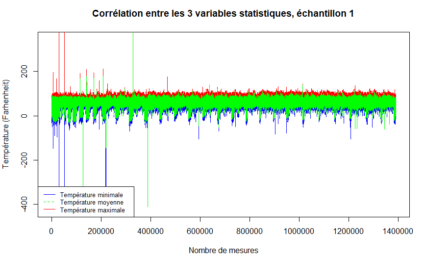
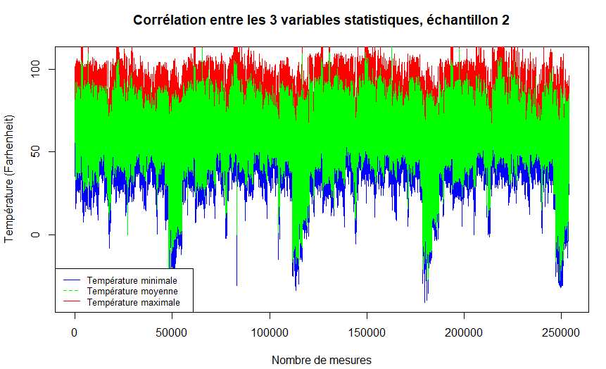
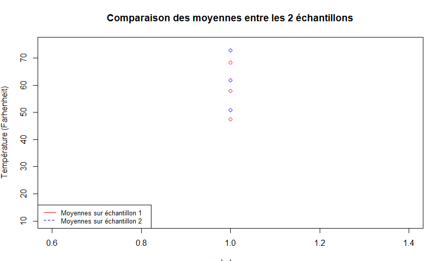
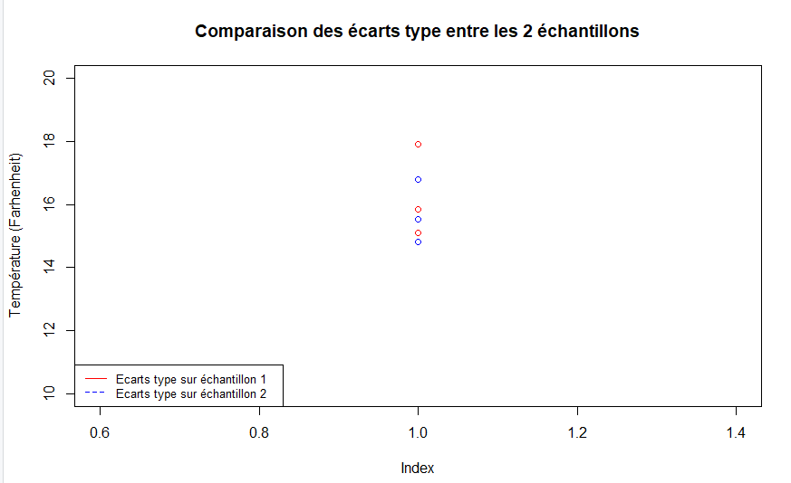

Rapport de l'évolution de la température aux US
Notre sujet porte sur l’évolution de la température de l’air aux Etats-Unis.
L’objectif est de visualiser l’évolution de la température dans différents états, représentatif des différentes zones climatiques des Etats-Unis.
Nous avons choisi ces 5 états afin d’avoir une bonne représentation climatique des Etats-Unis :
- Californie
- Louisiane
- Iowa
- Minnesota
- Montana
Mais nous divisons nos données en deux échantillons, un de 1980 à 2014 et un de 2014 à 2019
- Echantillon 1 : 1980 - 2014
- Echantillon 2 : 2014 - 2019
Tout d’abord sur l’échantillon 1980-2014 nous calculons les températures minimales.
Nous possédions les données des températures maximum ainsi que les températures moyenne. Sachant que la moyenne est une moyenne arithmétique, on a déterminé la temperature minimale à partir de la moyenne et de la température maximale avec un simple calcul :
TempMin = 2 * TempMoy - TempMax
Ensuite nous avons cherché la moyenne et l’écart type des températures max puis de même pour la température moyenne et minimale.
Grace à nos nouvelles données nous pouvons répondre à la question « Est-ce qu’il y a une corrélation (linéaire) entre ces trois variables ? »

A partir du graphique ci-dessus, nous remarquons que nos données forment des sinusoïdes. Il n'y a donc pas de corrélation linéaire entre ces trois variables.
Maintenant on utilise l’échantillon avec les données de 2015 à 2019 et nous appliquons la même procédure que pour l'échantillon précédent.

Avec nos nouvelles données, nous pouvons les comparer les moyennes des données trouvé précédemment afin de répondre à la question « Est-ce que l’on peut affirmer que la moyenne des trois variables a significativement augmenté par rapport à la période 1980-2014? »

Moyenne des températures maximum pour l'échantillon 1 : 68,25
Moyenne des températures maximum pour l'échantillon 2 : 72,78
Moyenne des températures minimales pour l'échantillon 1 : 47,42
Moyenne des températures minimales pour l'échantillon 2 : 50,76
En effet en comparant les deux échantillons nous remarquons que chaque moyenne a augmenté.
De même pour l’écart type.

Ecart type des températures maximum pour l'échantillon 1 : 17,89
Ecart type des températures maximum pour l'échantillon 2 : 16,80
Ecart type des températures minimales pour l'échantillon 1 : 15,11
Ecart type des températures minimales pour l'échantillon 2 : 14,8
Moyenne des ecart type pour l'échantillon 1 : 15,84
Moyenne des ecart type pour l'échantillon 2 : 15,51
Nous remarquons que la moyenne de l'écart-type de l'échantillon 1 est quasi similaire à celui de l'échantillon 2.
En moyenne, chaque température relevé sur les deux périodes a un écart de 15°F par rapport à la moyenne générale de leur échantillon respectif.
Sur la bases des données que vous avez étudié que peut-on conclure alors sur l’épineuse question du réchauffement climatique ?
Etant donné que la moyenne des écarts-types n'a pas évolué mais que la moyenne générale a augmenté de manière significative entre les deux périodes étudiés,
nous pouvons conclure qu'en effet les températures aux Etats-Unis ont augmenté. Pour imager : Les températures ont effectué une translation vers le haut du thermomètre.
Présentation de l'équipe
Thierry Tsang
Passionné depuis toujours par les possibilités et la puissance des Technologies Web. En toute logique, il décida de vivre de sa passion et une fois diplômé en 2016 d'un Baccalauréat Scientifique spécialité Informatique et Sciences du Numérique, Thierry entreprit une licence en Informatique à l'Université de Normandie dont il sortit diplômé en 2019 avec une spécialisation dans le Développement Web. Durant sa dernière année de licence Informatique, il effectua un stage en tant que Développeur Web Junior dans le groupe JFC Normandie : spécialiste de la vente et de la réparation de voitures hauts de gamme. Afin d'atteindre sa finalité professionnel qui est de devenir un Directeur des Systèmes d'Information (DSI), Thierry décida de rejoindre en septembre 2019 les rangs du Master MIAGE de l'Université Côte d'Azur dont il est désormais étudiant à plein temps.
Benoît Montorsi
Après avoir obtenu un Baccalauréat STI2D option SIN mention très bien, je me suis dirigé vers un BTS Systèmes Numériques option Informatique et Réseaux. Ces diplômes étaient plus orientés programmation informatique, dans différents langages (C,C++, Java, Web, mobile…). Durant mes formations, j’ai fait différents projets de groupe, m’ayant introduit au travail en équipe, en informatique. Voulant faire carrière dans le développement de logiciels informatiques après mes études, je me suis donc dirigé vers le parcours MIAGE, afin d’approfondir mes connaissances en ce domaine qu’est le développement.
Thomas Gauci
J’ai d’abord obtenu un baccalauréat S SVT option informatique. Cette option m’a permis de connaître l’univers de l’informatique, je me suis donc dirigé vers un enseignement basé sur ça. Je suis rentré dans un BTS Systèmes Numériques option Informatique et Réseaux finissant major de promo. Ce BTS m’a permis de connaître beaucoups de langages ( C,C++,CGI++,Java,SQL, etc) , quelques connaissances en réseaux, en conception orientée objet ainsi que la travail en groupe par le biais de projets. J’ai ensuite obtenu ma licence MIAGE, cela m’a permis de m’améliorer en programmation et d’apprendre les logiciels de gestion de projet tel que github et maven. Souhaitant continuer mes études dans l’informatique mais voulant me démarquer j’ai choisi parcours MIAGE qui regroupe l’informatique et le management.